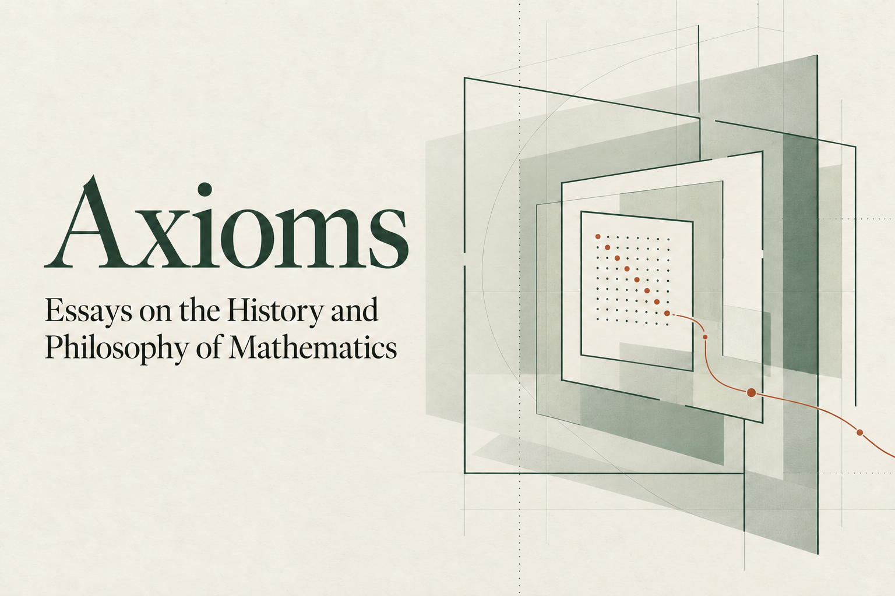

Can One Hear the Shape of a Drum?
Wronskian boundary operators connect analytic planar geometry with its Dirichlet spectrum, tested through a Neumann-oval case study.
View projectMathematics · Research · Reflection
I study structures, patterns, and the questions behind them. This is a growing record of my research, mathematical reflections, and reading.
Begin with an introduction01
SDSZ · Class of 2027
I'm Jiankun (Kevin) Xu, a Grade 12 student at The Experimental High School Attached to Beijing Normal University. My interests lie in mathematics and philosophy, especially model theory and the foundations of mathematics. Working through proofs led me to ask what I was trusting when I accepted their conclusions. Why do we adopt particular axioms? What does it mean for a mathematical statement to be true? These questions now guide much of my reading and writing.
02
Selected work across pure mathematics, scientific computing, applied problems, and mathematical exposition.
View the complete indexWronskian boundary operators connect analytic planar geometry with its Dirichlet spectrum, tested through a Neumann-oval case study.
View projectTwo studies of reaction–diffusion PINNs examine constraint repair and separate the effects of bound clipping from mean adjustment.
View projectA LeNet-style CNN maps flood susceptibility in Fangshan District using verified insurance claims and eleven environmental factors.
View projectAn expository Pioneer Academics paper that expands Newman's proof and traces integer partitions through generating functions, contour integration, and asymptotic analysis.
View paper03
An ongoing essay series on the history and philosophy of mathematics.

Ongoing essay series
Essays on the history and philosophy of mathematics, beginning with the question of how to measure infinity.
Explore the series04
Education, selected research, engineering projects, honors, and skills.